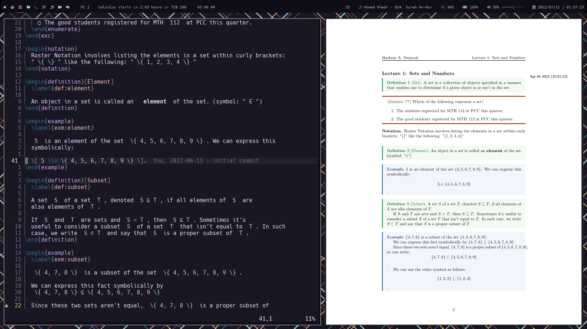

For a very long time, I have been trying to create the perfect setup for note taking in general (but more specifically, for math). Before, I used to use notion to take my notes, which was okay, but I wanted something much more productive. And thus, my system was BORN!
Here are how some of my notes look like:


You can look at my notes source code here. I also store all my final notes here.
I created this method during the summer of my 10th year in high school. I am preparing my self for when I go to university. So I set myself 4 goals.
- Writing mathematical equations must be easier than writing them by hand and faster than my professor.
- Creating and using citations must be straightforward and easy.
- Drawing figures must be as easy, fast, and simple.
- My notes are
- manageable
- searchable
- easy to access
- no lag to switch between classes
I will have a ton of posts talking about this specific subject, but for now, I will go over Step 1.
NeoVim and LaTeX
NeoVim is a terminal-based text editor. It’s a better version of Vim.
I use NeoVim for everything. (You can find my custom NeoVim config here).
LaTeX is a markup language used by professors who want to publish their papers, which is unfortunate because it’s a great tool to take notes on, besides school. This setup took me about 1 year to make and it’s still a work in the progress. Luckily, for you, you won’t have to figure anything out because I’ve done everything for you.
Now, with that out of the way, here is what my screen looks like when I am working with LaTeX:

On the left side, I have my editor (NeoVim) and on the right side, I have my pdf viewer Zathura.
Here is a quick list of my utilities:
- OS (Operating System): Arch Linux
- WM (Window Manager): BSPWM
- Text Editor: NeoVim
- Pdf Viewer: Zathura
- Terminal Emulator: Xfce4-Terminal
You can view all my plugins here. You can view all my LaTeX specific plugins here. The main LaTeX plugin I use is vimtex. It provides:
- Syntax highlighting
- Auto compiling
- Renaming entire environments
- Shows you the toc (Table of Contents)
And much more.
Using Packer, I configured it as follows:
use { 'lervag/vimtex' }
vim.cmd(let g:vimtex_view_method='zathura')
vim.cmd(let g:tex_flavor='latex')
vim.cmd(set conceallevel=2)
vim.cmd(let g:vimtex_quickfix_enabled=0)
The first line tells vimtex which pdf viewer to use. The second line tells
vimtex which type of tex to use. The third line configure the concealment. This
is a feature where LaTeX code’s replaced or made invisible when your cursor
isn’t on that line. By making \\[, \\], $ invisible, they’re less
obtrusive which gives you a better overview of the document. This feature also
replaces \\"i"n by ∈. The final line tells vimtex to not open the QuickFix
list every time it compiles a file for you.
Snippets
What are Snippets
One of the major reasons why I’m so fast at typing when it comes to LaTeX, is because of snippets.
A snippet is a short reusable piece of text that’s triggered by some other text.
There’re also snippet managers, which manages the snippets that you make. There’re tons of snippet managers out there, but I use UltiSnippets.
You have snippets for each filetype and a set of snippets for all filetypes. For example, you might have snippets for python, while having different snippets for LaTeX.
You can take a look over here to see all my LaTeX snippets. It’s important to note that I split all my snippets into seperate files which makes it easier to manage.
Installing Snippets
Like before, go ahead and install these plugins via:
use { "SirVer/ultisnips" }
use { "honza/vim-snippets" }
use { "hrsh7th/nvim-cmp" }
-- Optional
use { "hrsh7th/cmp-buffer" }
use { "hrsh7th/cmp-path" }
use { "hrsh7th/cmp-nvim-lsp" }
use { "hrsh7th/cmp-nvim-lua" }
use { "hrsh7th/cmp-calc" }
use { "rcarriga/cmp-dap" }
use { "tzachar/cmp-tabnine" }
use { "quangnguyen30192/cmp-nvim-ultisnips" }
use { "kdheepak/cmp-latex-symbols" }
use { "hrsh7th/cmp-emoji" }
You’re gonna have to create a directory called: after/plugin/ in your NeoVim
config directory. This is where you’re going to put your configuration in. The
reason you put all your plugin configuration here is because NeoVim will run
all the .lua files within this directory. This means you don’t have to
manually require each file.
Create a file called after/plugin/cmp.lua and place this configuration in it.
local cmp = require('cmp')
local kind_icons = {
Text = "",
Function = "",
Constructor = "",
Method = "",
Field = "",
Variable = "",
Class = "",
Interface = "",
Module = "",
Property = "",
Unit = "",
Value = "",
Enum = "",
Keyword = "",
Snippet = "",
Color = "",
File = "",
Reference = "",
Folder = "",
EnumMember = "",
Constant = "",
Struct = "",
Event = "",
Operator = "",
TypeParameter = "",
},
vim.api.nvim_set_hl(0, "CmpItemKindCopilot", { fg = "#6CC644" })
vim.api.nvim_set_hl(0, "CmpItemKindTabnine", { fg = "#CA42F0" })
vim.api.nvim_set_hl(0, "CmpItemKindEmoji", { fg = "#FDE030" })
require("cmp").setup({
active = true,
setup = {
snippet = {
expand = function(args)
vim.fn["UltiSnips#Anon"](args.body)
end,
},
mapping = cmp.mapping.preset.insert {
["<C-y>"] = cmp.mapping({
i = cmp.mapping.abort(),
c = cmp.mapping.close(),
}),
['<C-e>'] = cmp.mapping({
i = cmp.mapping.abort(),
c = cmp.mapping.close(),
}),
['<A-j>'] = cmp.mapping(cmp.mapping.scroll_docs(-4), { 'i', 'c' }),
['<A-k>'] = cmp.mapping(cmp.mapping.scroll_docs(4), { 'i', 'c' }),
['<C-Space>'] = cmp.mapping(cmp.mapping.complete(), { 'i', 'c' }),
["<CR>"] = cmp.mapping.confirm({ select = true }),
},
formatting = {
fields = { "kind", "abbr", "menu" },
format = function(entry, vim_item)
-- Kind icons
vim_item.kind = string.format("%s", kind_icons[vim_item.kind])
if entry.source.name == "cmp_tabnine" then
robot = "ﮧ"
vim_item.kind = robot
vim_item.kind_hl_group = "CmpItemKindTabnine"
end
if entry.source.name == "copilot" then
octoface = ""
vim_item.kind = octoface
vim_item.kind_hl_group = "CmpItemKindCopilot"
end
if entry.source.name == "emoji" then
smiley = "ﲃ"
vim_item.kind = smiley
vim_item.kind_hl_group = "CmpItemKindEmoji"
end
-- NOTE: order matters
vim_item.menu = ({
nvim_lsp = "",
nvim_lua = "",
copilot = "",
cmp_tabnine = "",
latex_symbols = "",
ultisnips = "",
calc = "",
path = "",
buffer = "",
emails = "",
emoji = "",
})[entry.source.name]
return vim_item
end,
},
sources = {
{ name = "nvim_lsp" },
{ name = "nvim_lua" },
{ name = "copilot" },
{ name = "cmp_tabnine" },
{ name = "latex_symbols" },
{ name = "ultisnips" },
{ name = "calc" },
{ name = "path" },
{ name = "buffer" },
{ name = "gh_issues" },
{ name = "emails" },
{ name = "emoji" },
},
confirm_opts = {
behavior = cmp.ConfirmBehavior.Replace,
select = false,
},
window = {
completion = cmp.config.window.bordered(),
documentation = cmp.config.window.bordered(),
},
experimental = {
ghost_text = true,
native_menu = false,
},
},
})
You don’t need to worry too much about what is going on here, because it’s not worth it. You can view all my custom icons here.
Adding Snippets
To add snippets, you first must configure UltiSnips itself. To do this, add
vim.cmd([[
" make YCM compatible with UltiSnips (using supertab)
let g:ycm_key_list_select_completion = ['<C-j>', '<Down>']
let g:ycm_key_list_previous_completion = ['<C-k>', '<Up>']
" better key bindings for UltiSnipsExpandTrigger
let g:UltiSnipsExpandTrigger = "<Enter>"
let g:UltiSnipsJumpForwardTrigger = "<C-j>"
let g:UltiSnipsJumpBackwardTrigger = "<C-k>"
" open the file in a new tab
let g:UltiSnipsEditSplit='tabdo'
" the location of the snippets
let g:UltiSnipsSnippetDirectories=[$HOME."/.config/nvim/UltiSnips", "UltiSnips"]
]])
To you’re init.lua.
The important line is the last line. It tells UltiSnips where to look for
snippets. View here
for more info.
Creating your own Snippets
Place your snippets in ~/.config/nvim/UltiSnips/ or wherever you told
UltiSnips to find them. Each language has it’s own specific snippet file. For
example, python snippets will be located at
~/.config/nvim/UltiSnips/python.snippets.
Or, instead of manually creating that file, open a file with that extension. For
example: test.py. Then, inside that file, type :UltiSnipsEdit. That will
create the file ~/.config/nvim/UltiSnips/python.snippets for you.
Here is a basic skeleton for a snippet.
snippet SNIPPET NAME "SNIPPET DESCRIPTION"
...
endsnippet
Add placeholders.
snippet document "Creates a document"
Document Name: $1
$0
endsnippet
The $1 and $0 are where your placeholders will be. The $0 is always the
final placeholder. Now, you can create information within the placeholders like
this.
snippet document "Creates a document"
Document Name: ${1:DOCUMENT NAME}
$0
endsnippet
Now, the placeholder says DOCUMENT NAME, and when you reach that placeholder, it’ll be highlighted in visual mode, and you can overwrite it.
Now you know the basics, let’s get into some examples.
The code for this is probably the simplest.
Here’s the snippet code.for it:
snippet sign "Signature"
Yours sincerely,
Hashem A. Damrah
endsnippet
You can also run shell commands inside snippets, but you have to use back ticks (``) for that.
Here’s the snippet code.for it.
snippet date-time "Today's date and Current Time"
`date "+%b %d %Y %a %R`
endsnippet
LaTeX Snippets
Environments
To insert an environment, all I have to do is type beg. I created this snippet in a special manner. It only triggers whenever it’s the first word typed on the line. Also, you don’t need to hit TAB because it will automatically expand for you.
You start typing out what kind of environment you want. Then, once you’re done, hit tab. That will move you into the environment.
snippet beg "begin{} / end{}" bAi
\begin{$1}[$2]
\label{$3:${4:${2/\\\w+\{(.*?)\}|\\(.)|(\w+)|([^\w\\]+)/(?4:_:\L$1$2$3\E)/ga}}}
${VISUAL}$4
\end{$1}$0
endsnippet
- Line 3 is preforming a regex expression. It’s taking whatever you type in placeholder number 2, making it all lowercase, and replacing the spaces with underscores.
- The b means If the trigger word is the first word on the line, and no writing comes afterword, then expand.
- The A means Expand without the trigger key, expand right after the person types the trigger word.
- The ${VISUAL} means whatever you’ve deleted will be pasted there. But, you have to visually select the text, then hit TAB.
Now, I have a ton of different environments that I commonly use.
Sometimes you may want a specific environment with a specific label format, etc. I spent a little more time to create dozens of environment snippets.
Here’s my final result.
snippet doc "Document Environment" bAi
\begin{document}
${VISUAL}$1
\end{document}$0
endsnippet
snippet cnt "Center Environment" bAi
\begin{center}
${VISUAL}$1
\end{center}$0
endsnippet
snippet enum "Enumerate Environment" bAi
\begin{enumerate}
\label{enum:$1}
\item ${VISUAL}$2
\end{enumerate}$0
endsnippet
snippet item "Itemize Environment" bAi
\begin{itemize}
\label{item:$1}
\item ${VISUAL}$2
\end{itemize}$0
endsnippet
snippet case "Cases Environment" bAi
\begin{cases}
\label{case:$1}
${VISUAL}$2
\end{cases}$0
endsnippet
snippet prf "Proof Environment" bAi
\begin{proof}
\label{prf:$1}
${VISUAL}$2
\end{proof}
endsnippet
snippet ali "Align* Environment" bAi
\begin{align*}
${VISUAL}$1
${2:.}\end{align*}$0
endsnippet
context "text()"
snippet ali "Align Environment" bAi
\begin{align}
${VISUAL}$1
${2:.}\end{align}$0
endsnippet
snippet eqt "Equation Environment" bAi
\begin{equation}
\label{eqt:$1}
${VISUAL}$2
${2:.}\end{equation}$0
endsnippet
snippet eqt "Equation Environment" bAi
\begin{equation*}
\label{eqt:$1}
${VISUAL}$2
${2:.}\end{equation*}$0
endsnippet
snippet spt "Equation Split Environment" bAi
\begin{equation}
\label{spt:$1}
\begin{split}
${VISUAL}$2
\end{split}
${2:.}\end{equation}$0
endsnippet
snippet spt "Equation Split Environment" bAi
\begin{split}
${VISUAL}$1
\end{split}$0
endsnippet
snippet edt "Equation Dat Environment" bAi
\begin{equation}
\label{edt:$1}
\begin{alignedat}{$2}
${VISUAL}$3
\end{alignedat}
${2:.}\end{equation}$0
endsnippet
snippet edt "Equation Dat Environment" bAi
\begin{alignedat}{$1}
${VISUAL}$2
\end{alignedat}$0
endsnippet
snippet cse "Equation Case Environment" bAi
\begin{equation}
\label{cse:$1}
\begin{cases}
${VISUAL}$2
\end{cases}
${2:.}\end{equation}$0
endsnippet
snippet cse "Equation Case Environment" bAi
\begin{cases}
${VISUAL}$1
\end{cases}$0
endsnippet
snippet minipage "Minipage equation" bAi
\begin{minipage}{.${1:5}\linewidth}
\begin{${2:align*}}
${VISUAL}$3
${4:.}\end{$2}
\end{minipage}
endsnippet
snippet fig "Figure Environment (Image)" bAi
\begin{figure}[${1:htpb}]
\centering
\includegraphics[width=0.8\textwidth]{$2}
\caption{${3}}
\label{fig:${4:${3/\\\w+\{(.*?)\}|\\(.)|(\w+)|([^\w\\]+)/(?4:_:\L$1$2$3\E)/ga}}}
\end{figure}$0
endsnippet
snippet fig "Figure Environment (PDF)" bAi
\begin{figure}[${1:htpb}]
\centering
\incfig{$2}
\caption{${3}}
\label{fig:${4:${2/\\\w+\{(.*?)\}|\\(.)|(\w+)|([^\w\\]+)/(?4:_:\L$1$2$3\E)/ga}}}
\end{figure}$0
endsnippet
snippet tab "Tabular / Array Environment" bAi
\begin{${1:t}${1/(t)$|(a)$|(.*)/(?1:abular)(?2:rray)/}}{${2:c}}
$0${2/(?<=.)(c|l|r)|./(?1: & )/g}
\end{$1${1/(t)$|(a)$|(.*)/(?1:abular)(?2:rray)/}}$0
endsnippet
snippet tbl "Table Environment" bAi
\begin{table}[${1:htpb}]
\centering
\caption{${2:caption}}
\label{tab:${3:${2/\\\w+\{(.*?)\}|\\(.)|(\w+)|([^\w\\]+)/(?4:_:\L$1$2$3\E)/ga}}}
\begin{${4:t}${4/(t)$|(a)$|(.*)/(?1:abular)(?2:rray)/}}{${5:c}}
$6${5/(?<=.)(c|l|r)|./(?1: & )/g}
\end{$4${4/(t)$|(a)$|(.*)/(?1:abular)(?2:rray)/}}
\end{table}$0
endsnippet
snippet mat "Matrix"
\begin{bmatrix}
$0
${2:.}\end{bmatrix}
endsnippet
snippet det "Determinant matrix"
\begin{vmatrix}
$0
${2:.}\end{vmatrix}
endsnippet
snippet vec "Vector"
\begin{pmatrix}
$0
${2:.}\end{pmatrix}
endsnippet
snippet matil "Inline matrix"
\left[ \begin{smallmatrix}
$0
${2:.}\end{smallmatrix} \right]
endsnippet
snippet detil "Inline determinant"
\left| \begin{smallmatrix}
$0
${2:.}\end{smallmatrix} \right|
endsnippet
snippet vecil "Inline vector"
\left( \begin{smallmatrix}
$0
${2:.}\end{smallmatrix} \right)
endsnippet
Inline and Display Math
These are my two most frequency used snippets. They are responsible for bringing
me into math mode. They are ilm (Inline Math) and dm (Display Math).
snippet ilm "Inline Math" wA
$${VISUAL}$1$
endsnippet
snippet dm "Display Math" wA
\[%
${VISUAL}$1
${2:.}\]%$0
endsnippet
- The w at the end of the first line means that this snippet will expand at
word boundaries. So,
helloimwon’t expand, buthello imwill.
Sub and Super scripts
Sub Scripts
Another handy snippet are these ones, which is used for sub scripts.
a1 → a_1
a_12 → a_{12}
a_{12}3 → a_{123}
a_{123}4 → a_{1234}
a,i → a_{i}
, → _{}
The code for these snippets use regular expressions for there trigger. The first expands if there is a variable, followed by a number. Here’s the snippet code.
snippet "([a-zA-Z])(\d)" "Auto Number Subscript" Ar
`!p snip.rv = match.group(1)`_`!p snip.rv = match.group(2)`
endsnippet
The second snippet checks if there is a variable, followed by an underscore, followed by two numbers. Here’s the snippet code.
snippet "([a-zA-Z])_(\d\d)" "Auto Number Subscript" Ar
`!p snip.rv = match.group(1)`_`!p snip.rv = "{" + match.group(2) + "}"`
endsnippet
The next snippet checks if there is a variable, followed by an underscore, followed by a group of {} with numbers inside. It also checks if there’s a number in front of the closing bracket. Here’s the snippet code.
snippet "([a-zA-Z])_\{(\d+)\}(\d)" "Auto Number Subscript" Ar
`!p snip.rv = match.group(1)`_{`!p snip.rv = match.group(2) + match.group(3)`}
endsnippet
The next snippet puts certian variables in subscripts. Here’s the snippet code.
snippet "([a-zA-Z]),(i|k|p|q|m|n)" "Auto Variable Subscript" Ar
`!p snip.rv = match.group(1)`_{`!p snip.rv = match.group(2)`}
endsnippet
The final snippet puts me in subscript mode.
snippet , "Subscript" i
_{${1:${VISUAL}}}$0
endsnippet
Super Scripts
As for the superscripts, I use some quick snippets for basic things like squaring, cubing, raising to a variable. Here is a quick view of the snippets:
sq → ^{2}
cb → ^{3}
ss → ^{}
comp → ^{c}
inv → ^{-1}
a'x → ^{x}
a' → ^{}
Here are the snippets:
snippet ' "Superscript" i
^{${1:${VISUAL}}}$0
endsnippet
snippet "([a-zA-Z\d])'([a-zA-Z\d-])" "Superscript" Ar
`!p snip.rv = match.group(1)`^`!p snip.rv = match.group(2)`
endsnippet
snippet "([a-zA-Z\d])\^([a-zA-Z\d-]+)" "Superscript" Ar
`!p snip.rv = match.group(1)`^{`!p snip.rv = match.group(2)`}
endsnippet
snippet "([a-zA-Z\d])\^{([a-zA-Z\d-]+)}([a-zA-Z\d-]+)" "Superscript" Ar
`!p snip.rv = match.group(1)`^{`!p snip.rv = match.group(2) + match.group(3)`}
endsnippet
snippet sq "Square" iA
^{2}
endsnippet
snippet cb "Cube" iA
^{3}
endsnippet
snippet compl "Complement" iA
^{c}
endsnippet
snippet inv "Inverse" iA
^{-${1:1}}$0
endsnippet
snippet ss "Superscript" iA
^{$1}$0
endsnippet
Fractions
These snippets, are the funnest and they give you a big satisfaction whenever you pull them off.
Now, let’s start off with something easy. Creating a simple fraction.
snippet // "Fraction" iA
\frac{$1}{$2}$0
endsnippet
The core of the second snippet is regular expressions. It’s used to match
expressions like 3/, 4\pi/, 39_{\theta}/.
snippet '((\d+)|(\d*)(\\)?([A-Za-z]+)((\^|_)(\{\d+\}|\d))*)/' "Fraction" wrA
\\frac{`!p snip.rv = match.group(1)`}{$1}$0
endsnippet
In the fourth case, I tried to find matching parenthesis. But, all the work
went in vain because you cannot with UltiSnips. I had to use Python.
priority 1000
snippet '^.*\)/' "() Fraction" wrA
`!p
stripped = match.string[:-1]
depth = 0
i = len(stripped) - 1
while True:
if stripped[i] == ')': depth += 1
if stripped[i] == '(': depth -= 1
if depth == 0: break;
i -= 1
snip.rv = stripped[0:i] + "\\frac{" + stripped[i+1:-1] + "}"
`{$1}$0
endsnippet
Context
The number one problem that I had when I first started using UltiSnips was My snippets kept colliding with me writing text.
For example, let’s say you’re typing boss. Since it has ss, this will
expand to ^{}, which will result in bo\\{}.
The solution to keep this from happening is to use something called context.
This will help us determine if we are in the correct environment to expand the
snippet. Here’s the code for it:
global !p
def math():
return vim.eval('vimtex#syntax#in_mathzone()') == '1'
def not_math():
return vim.eval('vimtex#syntax#in_mathzone()') == '0'
def comment():
return vim.eval('vimtex#syntax#in_comment()') == '1'
def env(name):
[x,y] = vim.eval("vimtex#env#is_inside('" + name + "')")
return x != '0' and y != '0'
endglobal
Now we can add context math() to the snippets you would like to expand when
in math mode.
context "math()"
snippet ss "Superscript" iA
^{$1}$0
endsnippet
Postfix
Some other snippets I find worthy of me sharing them.
bar → \bar{}
hat → \hat{}
vec → \vec{}
abar → \bar{a}
ahat → \hat{a}
avec → \vec{a}
aabar → \overline{aa}
aahat → \widehat{aa}
aavec → \overrightarrow{aa}
These snippets are smart.
global !p
def choose_next(string, array, length=0):
return array[array.index(string) - (length or len(array)) + 1]
def bar_hat_vec(target, word, subscript = ''):
return '\\' + target + '{' + ('\\' + word + 'math' if word in special_bar_hat_vec else word) + '}' + (subscript or '')
def long_bar_hat_vec(target, word, subscript = ''):
return map_bar_hat_vec[target] + '{' + word + '}' + (subscript or '')
special_bar_hat_vec = ['i', 'j']
map_bar_hat_vec = {'bar': '\\overline', 'hat': '\\widehat', 'vec': '\\overrightarrow'}
bars = ['\\bar', '\\overline']
hats = ['\\hat', '\\widehat']
vecs = ['\\vec', '\\overrightarrow']
endglobal
snippet "(\b[a-zA-Z0]|\\[a-zA-Z]+)([_^](?:\{\S+\s?\}|[\da-zA-Z]))?(bar|hat|vec)" "Bar/Hat/Vector" Ar
`!p snip.rv = bar_hat_vec(match.group(3) or match.group(2), match.group(1), match.group(2) if match.group(3) else '')`
endsnippet
snippet "(?<!\\)\b([a-zA-Z]{2,})([_^](?:\{\S+\s?\}|[\da-zA-Z]))?(bar|hat|vec)" "Long Bar/Hat/Vector" Ar
`!p snip.rv = long_bar_hat_vec(match.group(3) or match.group(2), match.group(1), match.group(2) if match.group(3) else '')`
endsnippet
snippet "(\\bar|\\overline)(\{[\\a-zA-Z]+\s?\})((?:[_^](?:[\da-zA-Z]|\{[\\\w\d\s]+\}))?)" "Bar" r
`!p
snip.rv = choose_next(match.group(1), bars, 2) + match.group(2) + match.group(3)
`
endsnippet
snippet "(\\hat|\\widehat)(\{[\\a-zA-Z]+\s?\})((?:[_^](?:[\da-zA-Z]|\{[\\\w\d\s]+\}))?)" "Hat" r
`!p
snip.rv = choose_next(match.group(1), hats, 2) + match.group(2) + match.group(3)
`
endsnippet
snippet "(\\vec|\\overrightarrow)(\{[\\0a-zA-Z]+\s?\})((?:[_^](?:[\da-zA-Z]|\{[\\\w\d\s]+\}))?)" "Vector" r
`!p
snip.rv = choose_next(match.group(1), vecs, 2) + match.group(2) + match.group(3)
`
endsnippet
To understand this, you must have read the entire UltiSnips documentation.
Bra, Ket, and Bracket
I don’t use these snippets often, but I think they’re cool. So, here they are:
<| → \bra{}
|> → \ket{}
<a| → \bra{a}
|a> → \ket{a}
|a> → \ket{a}
\bra{a}|a> → \braket{a|a}
\ket{a}|a> → \braket{a|a}
\bra{a},a> → \braket{a,a}
\ket{a},a> → \braket{a,a}
Here’s the snippet code:
snippet '\<(.*?)\|' "Bra" riA
\bra{`!p snip.rv = match.group(1).replace('q', f'\psi').replace('f', f'\phi')`}
endsnippet
snippet '\|(.*?)\>' "Ket" riA
\ket{`!p snip.rv = match.group(1).replace('q', f'\psi').replace('f', f'\phi')`}
endsnippet
snippet '\\(bra|ket){(.*?)}(,)?([^\|]*?)\>' "Braket" riA
\braket{`!p
brake = "|" if match.group(3) is None else match.group(3)
snip.rv = match.group(2) + brake + match.group(4).replace('q', f'\psi').replace('f', f'\phi')`}
endsnippet
Course Specific Snippets
Beside my commonly used snippets, I have some snippets that are only required
in some of my classes. You can load this snippets by putting this in your
init.lua:
vim.cmd('set rtp+=~/Documents/school-notes/current-course')
The current-course folder I’m pointing to is a symlink. to my current
class. I’ll talk more about that on my next post.
In that folder, I have a ton of stuff, such as my lecture notes, assignments,
and my snippets. I store my snippets in the folder: current-course/UltiSnips.
You may recall when I had you put the “UltiSnips” in the list when configuring UltiSnips. The reason is because UltiSnips looks at every single folder in the rtp (run time path) and search for this folder. If it finds it, it’ll source all the snippet files it finds.
Here are some of my snippets for my Calculus 1 class.
For each course, I have specific environments that I made. So, I created a snippet for each environment.
snippet def "Definition Environment" bAi
\begin{definition}[$1]
\label{def:${2:${1/\\\w+\{(.*?)\}|\\(.)|(\w+)|([^\w\\]+)/(?4:_:\L$1$2$3\E)/ga}}}
$3
\end{definition}
endsnippet
snippet prop "Proposition Environment" bAi
\begin{prop}[$1]
\label{prop:${2:${1/\\\w+\{(.*?)\}|\\(.)|(\w+)|([^\w\\]+)/(?4:_:\L$1$2$3\E)/ga}}}
$3
\end{prop}
endsnippet
snippet thrm "Theorem Environment" bAi
\begin{theorem}[$1]
\label{thrm:${2:${1/\\\w+\{(.*?)\}|\\(.)|(\w+)|([^\w\\]+)/(?4:_:\L$1$2$3\E)/ga}}}
$3
\end{theorem}
endsnippet
snippet lem "Lemma Environment" bAi
\begin{lemma}[$1]
\label{lem:${2:${1/\\\w+\{(.*?)\}|\\(.)|(\w+)|([^\w\\]+)/(?4:_:\L$1$2$3\E)/ga}}}
$3
\end{lemma}
endsnippet
snippet cor "Corollary Environment" bAi
\begin{corollary}[$1]
\label{cor:${2:${1/\\\w+\{(.*?)\}|\\(.)|(\w+)|([^\w\\]+)/(?4:_:\L$1$2$3\E)/ga}}}
$3
\end{corollary}
endsnippet
snippet idn "Identity Environment" bAi
\begin{identity}[$1]
\label{idn:${2:${1/\\\w+\{(.*?)\}|\\(.)|(\w+)|([^\w\\]+)/(?4:_:\L$1$2$3\E)/ga}}}
$3
\end{identity}
endsnippet
snippet exc "Exercise Environment" bAi
\begin{exc}
\label{exc:$1}
\exercise{$2}
$3
\solution
$4
\end{exc}
endsnippet
snippet rmk "Remark Environment" bAi
\begin{remark}[$1]
\label{rmk:${2:${1/\\\w+\{(.*?)\}|\\(.)|(\w+)|([^\w\\]+)/(?4:_:\L$1$2$3\E)/ga}}}
$3
\end{remark}
endsnippet
snippet exm "Example Environment" bAi
\begin{example}
\label{exm:$1}
$2
\end{example}
endsnippet
snippet nta "Notation Environment" bAi
\begin{notation}[$1]
\label{nta:${2:${1/\\\w+\{(.*?)\}|\\(.)|(\w+)|([^\w\\]+)/(?4:_:\L$1$2$3\E)/ga}}}
$3
\end{notation}
endsnippet
snippet not "Note Environment" bAi
\begin{note}
\label{not:$1}
$2
\end{note}
endsnippet
snippet prev "Previously Seen Environment" bAi
\begin{previouslyseen}[$1]
\label{prev:${2:${1/\\\w+\{(.*?)\}|\\(.)|(\w+)|([^\w\\]+)/(?4:_:\L$1$2$3\E)/ga}}}
$3
\end{previouslyseen}
endsnippet
snippet prob "Problem Environment" bAi
\begin{problem}[$1]
\label{prob:${2:${1/\\\w+\{(.*?)\}|\\(.)|(\w+)|([^\w\\]+)/(?4:_:\L$1$2$3\E)/ga}}}
$3
\end{problem}
endsnippet
snippet obs "Observe Environment" bAi
\begin{observe}[$1]
\label{obs:${2:${1/\\\w+\{(.*?)\}|\\(.)|(\w+)|([^\w\\]+)/(?4:_:\L$1$2$3\E)/ga}}}
$3
\end{observe}
endsnippet
snippet pry "Property Environment" bAi
\begin{property}[$1]
\label{pry:${2:${1/\\\w+\{(.*?)\}|\\(.)|(\w+)|([^\w\\]+)/(?4:_:\L$1$2$3\E)/ga}}}
$3
\end{property}
endsnippet
snippet int "Intuition Environment" bAi
\begin{intuition}[$1]
\label{int:${2:${1/\\\w+\{(.*?)\}|\\(.)|(\w+)|([^\w\\]+)/(?4:_:\L$1$2$3\E)/ga}}}
$3
\end{intuition}
endsnippet
Putting it all Together
I have hundreds of other snippets that I use on a daily basis.
For example, I have:
+- → \pm
sr → \sqrt{}
sn → \sqrt[]{}
sum → sum_{n = 1}^{\infty}
lim → lim_{n \to \infty}
prt → \partial
int → \int
You can view all my latex snippets here
Correct spelling mistakes
I use this a TON. It’s so handy because I don’t have to leave insert mode, hover over the word, press z=, select the correct word, then go all the way back. UHHH, that was a lot of work! Also, if the word isn’t corrected incorrectly, I can exit insert mode, press u, and select the correct word, and from now on, it will always be corrected to the correct one, which is the one that I chose.
Now, put this in your init.lua.
vim.opt.spell=true
vim.api.nvim_set_keymap("i", "<C-l>", "<C-g>u<Esc>[s1z=`]a<C-g>u")
Auto completion
Now, besides snippets helping me out a ton when taking notes, I also have
autocompletion.
This is possible by using LSP. LSP is
a language server protocol, which allows me to get autocompletion,
suggestions, etc based on the language that I’m using.
Setting LSP in NeoVim
We first need to install these plugins:
use { 'neovim/nvim-lspconfig' }
use { 'onsails/lspkind-nvim' }
use { 'tami5/lspsaga.nvim' }
use { 'williamboman/nvim-lsp-installer' }
Install LaTeX language server
Installing your language server is super easy. For a complete list of all
the language servers NeoVim offers, head over here.
To install your language server, just run :LspInstall [lang name]. Now, you
have your language server installed in NeoVim.
But, you need to server installed on your computer. To do that, head over here and find your language. Follow the link that they provide and install it from there.
The language server for LaTeX is texlab. Run :LspInstall texlab.
If that doesn’t work, run.
cargo install --git https://github.com/latex-lsp/texlab.git --locked
To activate it, put this in your init.lua:
require('lspconfig').texlab.setup{}
Demo of LSP
Credit
I would like to give a thanks 👏 to Gilles Castel for teaching me everything. I would recommend to go and checkout his website!
Conclusion
So, I have proven to you that you can write LaTeX
- fast
- easily
- efficiently